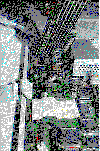

Previous
Next
TOC
Die GE Soft 50 MHz MC68030 CPU Karte
Auf der Atari Messe im Jahr 1992 konnte man die Düsseldorf die von
GE Soft entwickelte Beschleunigerkarte für den TT030 in Daughter-
boardausführung bewundern. Aufgrund der verschiedenen Platinenver-
sionen des TT030 und der damit verbundenen Lage der MC68030 CPU
wurde diese Beschleunigerkarte, die eine mit 50MHz getaktete MC68030
CPU besitzt jedoch nicht verkauft.
Hier ein Foto mit dem Prototypen der Beschleunigerkarte, obendrüber
"hängt" die 256 Megabyte fassende TT Ramkarte von GE Soft.

Kapitel Die GE Soft 50 MHz MC68030 CPU Karte, Seite 1